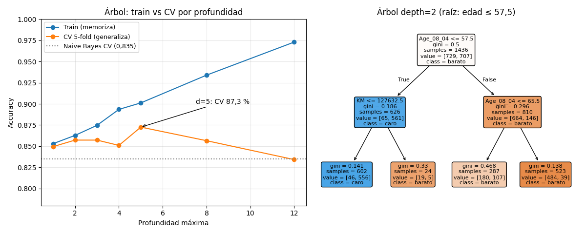

Bloque E · Clasificación · Lección 0035 · mar 13 oct
Naive Bayes y árboles: el ingenuo que funciona y las reglas sí/no
Win de hoy: Naive Bayes llega a 83,5 % suponiendo independencia que no existe; el árbol llega a 87,3 % con profundidad 5… y memoriza el train (99,9 %) si lo dejás crecer libre.
1 · Naive Bayes: «supongamos que nada se relaciona con nada»
Bayes dice: P(caro | datos) ∝ P(datos | caro) · P(caro). El problema es
P(datos | caro): la chance conjunta de (edad, KM, HP, cc, peso) es imposible de estimar directo.
El truco naive (ingenuo): suponer que las variables son independientes y multiplicar
las chances una por una. Sabemos que es falso (edad y KM van juntas, lección 0023 (Bloque D)),
pero igual da 83,5 % (CV): para ordenar clases alcanza con que los errores se compensen.
Rápido, sin perillas, gran baseline.
2 · Árboles: preguntar hasta separar
Un árbol hace preguntas sí/no: «¿edad ≤ 57,5?» → «¿KM ≤ 127.633?» → … hasta que cada hoja queda casi pura (casi todos caros o casi todos baratos). La profundidad es la perilla: poca = modelo tonto, mucha = memoriza.

Lectura triple: (1) d=5 gana (CV 0,8725), empatado con k-NN y logística (~87 %): tres algoritmos distintos, mismo techo del problema. (2) Sin límite, train 99,9 % pero CV 83,7 %: sobreajuste de manual. (3) La raíz (edad ≤ 57,5) coincide con el árbol de la lección 0013 (Anexo): la señal es robusta.
Regenerar la figura (mismo resultado versionado en assets/img/toyota/):
python3 scripts/make_figures.py --only naive-bayes-arboles3 · Tabla del partido (CV 5-fold, mismo target y folds)
| Modelo | CV accuracy | Qué lo hace especial |
|---|---|---|
| Naive Bayes | 83,5 % | Sin perillas, rapidísimo, baseline honesto |
| Árbol d=2 | 85,7 % | Se dibuja en una servilleta (3 preguntas) |
| Árbol d=5 | 87,3 % | Mejor punto: reglas finas sin memorizar |
| Árbol sin límite | 83,7 % | Train 99,9 %: memoriza, no aprende |
4 · Ambos en 12 líneas (reproducí 83,5 % y 87,3 %)
import pandas as pd
from sklearn.naive_bayes import GaussianNB
from sklearn.tree import DecisionTreeClassifier, export_text
from sklearn.model_selection import cross_val_score, StratifiedKFold
df = pd.read_csv("../ToyotaCorolla.csv")
cols = ["Age_08_04","KM","HP","cc","Weight"]
X, y = df[cols].values, (df["Price"] > 9900).astype(int).values
cv = StratifiedKFold(5, shuffle=True, random_state=42)
print(cross_val_score(GaussianNB(), X, y, cv=cv).mean().round(4)) # 0.8349
print(cross_val_score(DecisionTreeClassifier(max_depth=5, random_state=42),
X, y, cv=cv).mean().round(4)) # 0.8725
print(export_text(DecisionTreeClassifier(max_depth=2, random_state=42).fit(X, y),
feature_names=cols)) # el árbol de la Fig. 1, en textoTu turno: cambiá max_depth=5 por None y compará train vs CV:
vas a ver el sobreajuste con tus propios números (train ≈ 1,0, CV ≈ 0,84).
5 · Quiz (auto-chequeo inmediato)
6 · Fuente primaria y cierre
Para profundizar (1 fuente): James et al., An Introduction to Statistical Learning — cap. 4.4 (NB) y 8.1 (árboles). Más contexto en RESOURCES.
Siguiente en el orden del Bloque E: 0036 · Random forest y boosting (mié 14): si un árbol memoriza, ¿qué tal un bosque que vota?